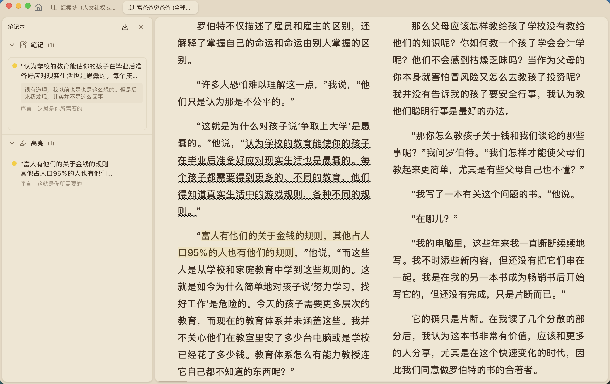

800 页技术书里找一段代码，我再也不用 Ctrl+F 瞎猜了
一本 800 页的 TypeScript 设计模式书卡了我三天——直到朋友丢来 ReadAny，让我对着书直接问。这是一个开发者和他的数字书架之间，从翻到查再到聊的完整故事。
那是周四下午三点半，阳光斜斜打在显示器上，我盯着那本 823 页的《TypeScript 设计模式实战》，第三次打开 Calibre 的全文搜索框又关掉了。
我卡在一个很具体的地方：前几天读的时候看到过一个工厂模式的变体，它用了某种延迟初始化的技巧，和我手头项目里写的单例工厂有点像。但那时候只是随手划了线，没记章节。现在项目 deadline 逼上来，我必须找到那段代码的原始出处，对照着检查自己有没有踩坑。
Calibre 的全文搜索只认关键词，可我连关键词都记不全——只记得大意是「延迟实例化 + 类型安全的注册表」。我试着搜「工厂」，出来两百多条；搜「延迟」，又是一堆不相关的注释。KOReader 那边更惨，手机上翻了一下午眼睛都花了还是没找到。
这时候 Slack 里蹦出来一条消息，是同组的老张：「你还在翻那本 TypeScript 书？用 ReadAny 啊兄弟，对着书问就行。」
把书倒进一个会聊天的书架
我抱着将信将疑的心态去ReadAny官网看了一眼，然后找了官方下载——安装包不大，Tauri 壳子启动快得离谱，点开就是一个干净的三栏界面。导入书籍的操作简单到让我有点意外：把 EPUB 文件拖进去，点一下「构建索引」，它就自己在后台跑了。
后来去翻了ReadAny文档才知道那两分钟里它干了不少事：把整本书按语义段落切成一个个小块，调我填的嵌入模型给每块生成向量，再塞进本地 SQLite 的向量索引表。说白了，就是把一本静态的书变成了一个可以被检索的向量数据库。
索引跑完我直接在对话框里敲：「那本 TypeScript 设计模式里，有一个延迟初始化的工厂模式变体，在哪讲的？它和普通的工厂模式有什么区别？」
我本来没抱太大期望——不就是个套了壳的 AI 聊天吗？结果三秒钟后回答就出来了，而且后面还跟着两个小标签，一个标着出处在第 4 章第 187 页，另一个是我划线过的那段原文。
原来检索可以不只认关键词
那天下午我蹲在 ReadAny 里跟这本书聊了快一个小时，才慢慢搞明白它背后的路数。
传统搜索不管是 Calibre 还是 KOReader，本质都是关键词匹配——你得记住原话里的某个词，它才能帮你定位。可很多时候我只记得意思，不记得具体用了什么词。ReadAny 聪明的地方在于它同时跑了两路检索：一路是向量相似度，把我的问题也转成向量，找语义上最接近的段落；另一路是 BM25 关键词匹配，保证像具体的类名、函数签名这种精确的东西不会被漏掉。两路结果合并排序，取最相关的那几个分块喂给 AI。
这就解决了我那天的核心痛点——我记不住原文，但我记得大意。向量检索能听懂我在说什么，BM25 又不会漏掉我可能提到的精确术语，两条腿走路比单腿蹦靠谱多了。

聊到兴起我又试了几个更离谱的问题：「作者在第 5 章里举的那个观察者模式的例子，换成 RxJS 的写法应该是什么样？」「帮我把这本书里所有提到『依赖注入』的章节按出现顺序列出来。」「第 7 章读起来好抽象，用三句话给我讲清楚这章到底想解决什么问题。」
没有一个让我失望的。AI 回答的时候不会瞎编，因为 prompt 里严格限制了只能基于检索回来的上下文；每个关键论点后面都带着出处标注，我随时可以点回去核对原文。而且当前会话里它还记着之前聊过的内容——聊完工厂模式再聊观察者模式，它记得我们刚才在讨论哪种设计模式的变体，不会把上下文给丢了。
一个让我意外的细节：它真的本地优先
折腾了一下午我才想起来问一个我最关心的问题：这些书、我的划线、还有对话记录，都存在哪？
答案是全在本地。ReadAny 的 SQLite 数据库、向量索引、所有标注和高亮，默认都存在我自己的硬盘上。AI 对话走的是我自己配置的 API 密钥——我用的是云端的，不过它也支持本地跑 Ollama。跨设备同步是可选功能，默认关闭，要开得自己配 WebDAV 或者 S3。
这点对我来说挺重要的——我书架里不止有技术书，还有一些没发表的论文初稿和客户的需求文档。Calibre 我一直在用，但它只管把书整理好让我能翻，不管内容本身。ReadAny 是第一层真的让我觉得「这本书真的在帮我干活」的工具。

后来我是怎么用它的
说回那本书。当天晚上我就找到了那段延迟初始化的工厂变体——在第 4 章第 187 页，作者叫它「注册表式懒加载工厂」，和我自己写的实现确实有两处关键差异。AI 在回答里还帮我指出了我项目里可能会踩的一个类型安全漏洞，让我在 deadline 前一天修掉了。
从那之后 ReadAny 就成了我书架上最常用的那个。现在每天早上打开电脑先把前一天读到的书丢进去跑一遍语义索引，工作间隙随手就能对着某段代码或者某个设计思路问它。标注和笔记直接导出到 Obsidian，我的技术笔记体系再也不用手动搬运了。
回头看看 Calibre 和 KOReader，我还是在用——Calibre 管我的书库，KOReader 管手机上的通勤阅读。但 ReadAny 补上了它们俩都没做的那一层：当我真的想读懂一本书，而不是翻过它的时候。它不是又一个阅读器，是那个坐在书架旁边、能帮我找到任何一段话并且把前因后果给我讲清楚的研究助理。
就老张说的那句话：「你不用再去记你读过什么，让书自己告诉你它有什么。」